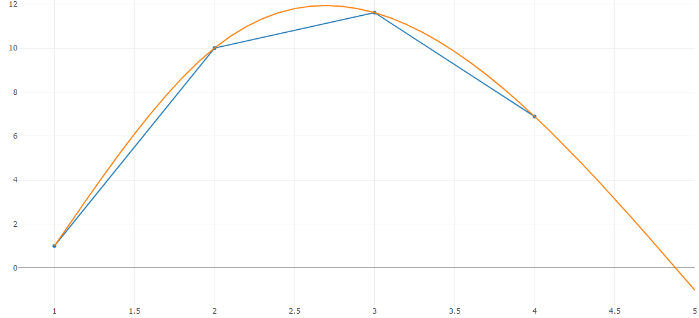

ВИЗУАЛИЗИРУЙТЕ ТАБЛИЧНЫЕ ГРАФИКИ С ПОМОЩЬЮ СПЛАЙНОВ
ИНТЕРПОЛЯЦИЯ ПОЗВОЛИТ ВАМ ДОСТРОИТЬ ГРАФИК ФУНКЦИИ ПО ЗАДАННЫМ ТОЧКАМ. ПОПРОБУЙТЕ, ЭТО БЕСПЛАТНО.
Наш сайт работает быстро, а самое главное - с ним удобно работать.
Введите точки, настройте начальный шаг и получите готовый график.

Пока наш сайт находится в бета-версии, он бесплатен, поэтому спешите воспользоваться!